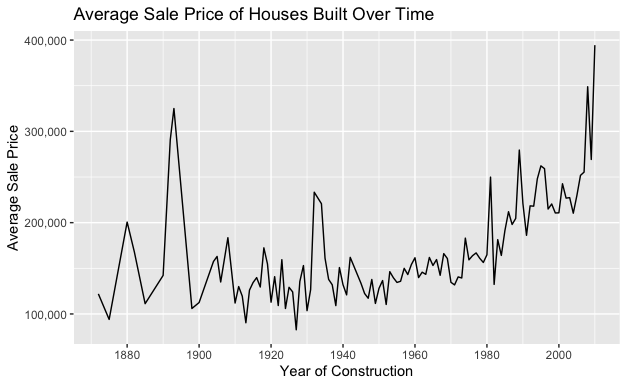
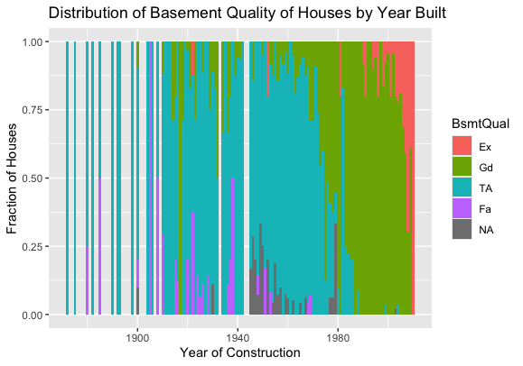
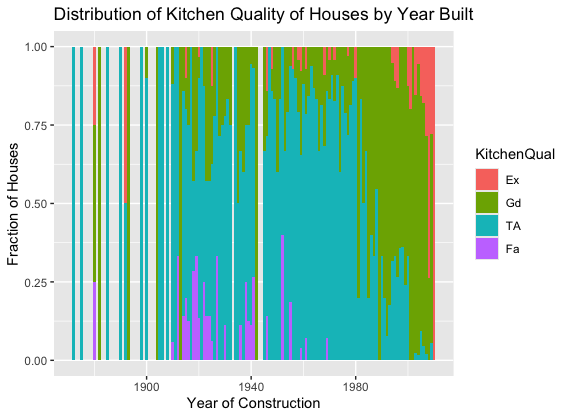
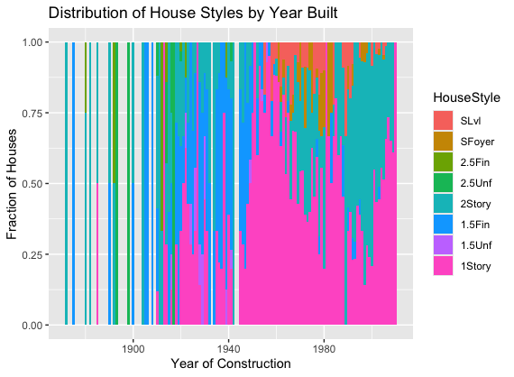
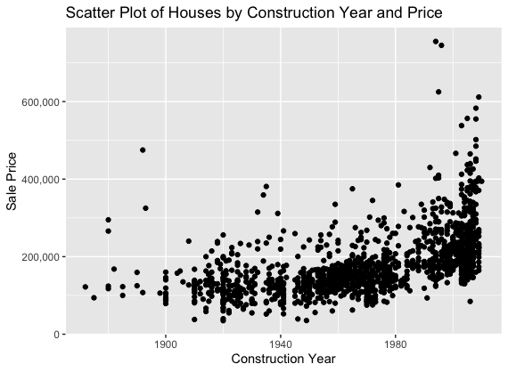
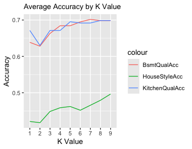

Noticeable difference in fluctuation of house style values compared to other house features
Abstract
Using a dataset that comprised roughly 80 features of 1460 houses built between 1872 and 2010 in Ames, IA, I chose to answer the question, “How do the different features of a house over time correlate to the trend between the construction year and the sale price of a house?”. Although the trend between the construction year and sale price of a house can be discovered quite easily, the overall value of other factors across time will have a more complex and hidden trend.
I chose 3 factors to work with: house style, basement quality, and kitchen quality. Using a K Nearest Neighbor (KNN) classification model, I was able to determine how much each factor correlated with the trend between construction year and sale price. The average KNN accuracy for basement quality and kitchen quality was roughly the same, while the average accuracy for house style was much lower, indicating a lower correlation with the trend between construction year and sale price.
The KNN results show that different features of the house can follow the same trend differently and thus their values fluctuate differently over time. It provides a way to predict the strength of a feature’s correlation to the overall trend between construction year and sale price.
Background
I started exploring the dataset from a practical standpoint, wondering how to measure the values of different features. Although a natural approach would have been to investigate how to predict the sale price of a home given its features, I thought it would be interesting to try and do the reverse. This eventually led to the formation of the research question, “How do the different features of a house over time correlate to the trend between the construction year and the sale price of a house?”.
The dataset itself is collected from homes sold in Ames, IA from 2006 to 2010, with construction years (YearBuilt in the dataset) ranging from 1872 to 2010. The details of 80 features were collected for each house, ranging from the condition, quality, and size of the overall house, garage, and basement, the type of house, the lot area, and more.
Results
Figure 1 shows the trend across time for the average sale price of all houses in a given year. This graph becomes the baseline comparison for the trends of other features. The actual variables used in the dataset were YearBuilt and SalePrice.
Figure 1

Figures 2, 3, and 4 show the distribution trends across time for the variables basement quality (BsmtQual), kitchen quality (KitchenQual), and house style (HouseStyle). The vertical axis only shows the percentage of houses with a particular feature in any given year, and not the total number of houses (each bar represents one year of houses). BsmtQual and KitchenQual are both rated on a 4 level scale: Fair (Fa), Typical/Average (TA), Good (Gd), Excellent (Ex). The possible house styles are 1 story (1Story), 1.5 stories with the second finished or unfinished (1.5Fin & 1.5Unf), 2 stories (2Story), 2.5 stories with the third finished or unfinished (2.5Fin & 2.5Unf), split foyer (SFoyer), and split level (SLvl).
Figure 2

Figure 3

Figure 4

The goal of the project was to determine how much each of the 3 variables above follow the trend between YearBuilt and SalePrice. To do this, I utilized a KNN search based on the YearBuilt and SalePrice variables, of which a scatter plot is shown in Figure 5.
Figure 5

The dataset was randomly split into a training subset (80% of the total dataset) and a test subset (20% of the total dataset). The K value for each search was varied from 1 to 9. For each variable and K value, the accuracy was defined as (# of correct predictions) / (# of total predictions). The following results are shown in Figure 6.
Figure 6

Although BsmtQual and KitchenQual had roughly equal accuracies across all K values, HouseStyle had a noticeably lower accuracy. This indicates that HouseStyle follows the YearBuilt/SalePrice trend to a lesser degree than BsmtQual and KitchenQual.
Discussion
There were several restrictions throughout the project that obstructed me from obtaining ideal results. The dataset was limited to only Ames, IA, which may not be representative of cities throughout the country. Also, certain categorical values in the dataset were rather vague (such as the scale used for KitchenQual), and there was no strict rule used to determine what value should be assigned to each house, which could have led to inaccurate results. Also, the KNN may not have been the best classification model to use, as I was limited to the content taught within the DSRP.
The following conclusion can be drawn: Different features may follow the same trend to different degrees, and it is important to find out roughly how the value of each variable changes over time. Furthermore, K Nearest Neighbor (KNN) models provide a way to explore how closely a categorical variable follows a trend of two given variables. These conclusions allow prospective house buyers to see which features of a house may be most important for a long term investment.
Future research would ideally contain exploration into more variables of the house (other than just the 3 within this project). It would also include research on a broader scope, such as datasets for large cities and rural areas.
Data and Code Sources
The original dataset can be found here: https://www.kaggle.com/competitions/house-prices-advanced-regression-techniques
The code for this project can be found here (under the MarcoProject: https://github.com/the-codingschool/DSRP-2024-Chenkai
Acknowledgements
I would like to acknowledge Sarah Parker for teaching me the required content to complete this project. I would also like to acknowledge Chenkai Hsu and Shruti for guidance on the specific details of the project.